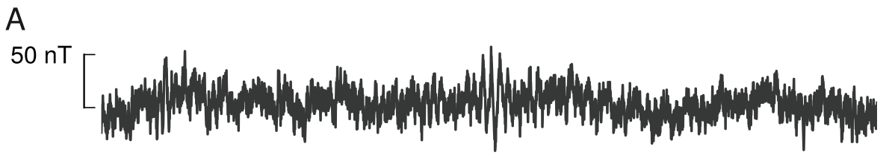
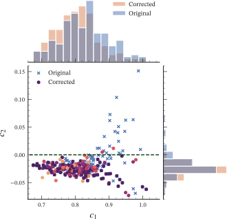
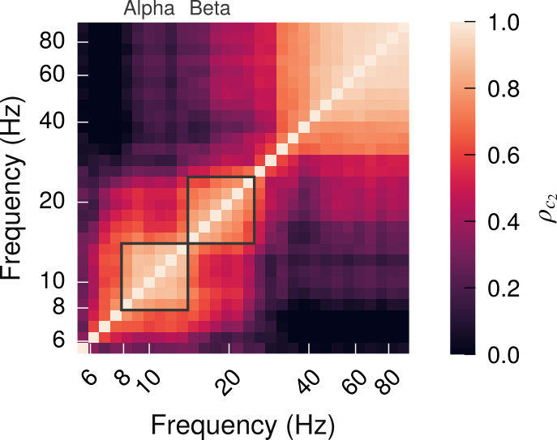
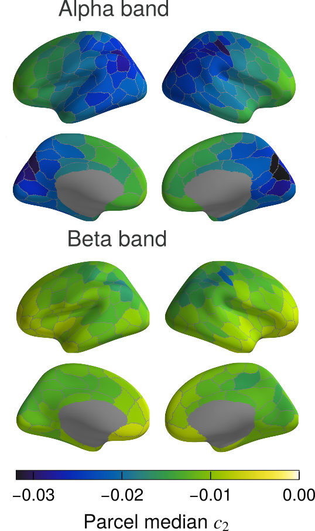

Multifractal analysis for studying criticality in neural dynamics
Université Paris Saclay & Aalto University
2025-05-06
Ph.D. Project
- Supervisors Philippe Ciuciu and Matias Palva.
- Collaboration project: Multifractal analysis and brain criticality expertise.
- Started December 2020
- December 2021 - May 2024 in Helsinki
Aim of the thesis
Draw a link between the observable properties of brain activity and our understanding of the organization of brain activity.
Explain multifractality to a larger audience of neuroscientists, and brain criticality to signal processing experts.
Outline
- Introduction
- 1st contribution: Modeling multifractality in critical neural dynamics
- 2nd contribution: Outlier detection in multifractal time series
- 3rd contribution: Characterization of the multifractal properties of brain oscillations (brief)
- Multifractal analysis toolbox
- Conclusion and perspectives
Introduction
How do we analyze the dynamics of continuous recordings of brain activity?
- We can observe some measure of the brain’s activity using different devices:

- functional Magnetic Resonnance Imaging (fMRI);
- Electroencephalography (EEG);
- Mangetoencephalography (MEG).
- We are interested in time-continuous dynamics, not time-locked to a stimulus.
- Need to investigate whole recordings1.
- The brain’s dynamics contain complex patterns, that are not easily characterized2.
- Oscillations, waves, spontaneous activity, etc.
- Need appropriate analysis tools.

Magnetoencephalography (MEG) recordings
Records magnetic dipoles: neural assemblies that consitute unclosed circuit loops1.
The recordings can be projected on the cortical surface:
- “Source reconstruction”;
- Averaged over parcels of the cortical surface.
Oscillations appear as repetitive patterns of brain activity, at different frequencies:2 
Brain activity displays scale invariance
- Scale invariance is associated to power-law scaling: \[\color{#CC5500}{f}(x) \propto x^{-\color{red}{a}} \,.\]
- Invariant to rescaling operations: \(\color{#CC5500}{f}(x/b) = cst \cdot b^{\color{red}{a}} x^{-\color{red}{a}} \propto x^{-\color{red}{a}} \,.\)
- Appears as a linear relation in log-log space: \[\log \color{#CC5500}{f} \propto {-\color{red}{a}} \log x\]
- In MEG recordings, we observe power-law scaling in DFA analysis1:
- \(\langle \color{#CC5500}{F}(\tau) \rangle\): average detrended variance across all time windows \(\tau\); \[ \log \langle \color{#CC5500}{F} (\tau) \rangle \propto \color{red}{\alpha} \log \tau \,.\]
- Careful selection of window sizes.
Phases outline the macroscopic behavior of complex systems
- Complex systems: large number of agents with local interactions.
- Example: Ising model of ferromagnets: \[ \mathcal{H}(\sigma) = - \frac{J}{k_B T} \sum_{\langle i, j \rangle} \sigma_i \sigma_j \]
- As the control parameter changes, the model transitions from a magnetized phase to an amagnetic phase.
- In the 2D and 3D Ising model, the magnetization phase transition is critical.
Scale invariance is the hallmark of criticality
- Identified by the scaling of the correlation function \(\color{#CC5500}{G}(r)\).
- In the Ising model, \(\color{#CC5500}{G}(r) = \langle \sigma_k \sigma_{k+r} \rangle_k - \langle \sigma_k \rangle_k \langle \sigma_{k+r} \rangle_k\):
| \(T \ll T_c\) | \(T \sim T_c\) | \(T \gg T_c\) | |
|---|---|---|---|
| \(\color{#CC5500}{G}(r) \simeq\) | \(\langle\sigma_k \rangle_k^2 + r^{-2} e^{-r/\xi}\) | \(r^{-\color{red}{1/4}}\) | \(r^{-1/2} e^{-r/\xi}\) |
Away from criticality, the correlation decays exponentially with the characteristic length \(\xi\).
At criticality \(\xi \to +\infty\) diverges: power-law scaling emerges.
Structures emerge at every (spatial) scale of the Ising model:
The brain criticality hypothesis
Considers the brain as a dynamical system operating near the critical point of a phase transition1.
Aims to explain the scale invariance observed in the brain:
- In avalanches;
- In oscillations.
Criticality is thought to provide advantages, supported by modeling2:
- Information storage;
- Information transmission;
- Computational power;
- Homeostatically adjusting itself to the optimal point.
Characterization of scale invariance in brain time series
- Three main approaches:
- Temporal dynamics of oscillations1;
- Avalanches (not detailed here)2;
- Low-frequency fluctuations of broadband recordings3.
In practice we obtain scaling exponents via estimators:
- Power spectral density (\(\color{red}{\beta}\));
- Detrended fluctuation analysis (\(\color{red}{\alpha}\))4;
- Wavelet-based formalism (\(\color{red}{c_1}\))5.
Characterization of monofractal time series: pointwise regularity
Multifractal spectrum and local variations in regularity
Multi-resolution quantities are associated to pointwise regularity
- Estimation of pointwise local regularity on sampled time series is not feasible.
- We rely on multi-resolution quantities (MRQs) to characterize scale invariance.
- An example of MRQ is the discrete wavelet decomposition \(d_X(j, k)\) of a time series:
- The notion of pointwise regularity is fundamentally linked to MRQs1: \[ \textrm{At each point } t_0, \quad h(t_0) = \liminf_{j\to 0}\frac{d_X(j, k(t_0))}{j} \,. \]
MRQ for multifractal analysis: wavelet \(p\)-leaders
- Wavelet coefficients are a natural choice, but not suited for multifractal analysis.
- We rely on \(p\)-leaders \(\ell^{(p)}(j, k)\)1 derived from the \(d_X(j, k)\).
- Correspond to the \(p\)-exponent notion of regularity.
- Obtained via a weighted \(p\)-norm: \[ \ell^{(p)}\left(j, k_j(t)\right) = \left( \sum_{j'\leqslant j} \sum_{\delta=-2^{j-j'}}^{2^{j-j'}} 2^{j-j'} d_X\left(j, k_j'(t) + \delta \right)^p\right)^{-p} \,. \]
Log-cumulants and the multifractal spectrum
We rely on estimating exponents derived from scaling functions.
The multifractal spectrum can by characterized by the log-cumulants \((\color{red}{c_m})_m\)1:
- \(\color{red}{c_1}\) localizes the mode of the spectrum;
- \(\color{red}{c_2} \in \mathbb{R}_-\) determines the opening of the spectrum about the mode;
- \(\color{red}{c_3}\) characterizes the asymmetry of the spectrum about the mode.
The log-cumulants operationalize the concepts of scale invariance:
- \(c_1\) operationalizes self-similarity;
- \(c_2\) operationalizes multifractality.
Estimation of the log-cumulants
- Using the wavelet \(p\)-leader formalism, we can estimate the \(c_k\) from the log-cumulants of our MRQ: \[ \color{#CC5500}{C_m}(j) = \mathrm{Cumulant}_m \left[ \left( \log \ell^{(p)}_{j, k} \right)_k \right] = c_m^0 + j \color{red}{c_m} \]
Prior art on multifractal analysis of neuroimaging data
- In fMRI1.
- Task vs rest modulates multifractality2;
- Low temporal resoultion BOLD signal.
- Low-frequency fluctuations in EEG3;
- Task vs rest (MEG).4
- Oscillation envelope:
- Epileptic seizure identification;5
- Brain-heart interplay.6
Motivation of the thesis project
How can we interpret the multifractal properties of brain signals?
First contribution:
Multifractality in critical neural field dynamics
Merlin Dumeur, Sheng H. Wang, J. Matias Palva, Philippe Ciuciu. Multifractality in critical neural field dynamics. Submitted to Physical Review Letters, in rev.
Aims of the contribution
Brain criticality hypothesis predicts scale invariance.
Multifractal analysis characterizes scale invariance fully.
Missing modeling basis between brain criticality and multifractality.
Model: Landau-Ginzburg formulation of Wilson-Cowan field equations
System of stochastic differential equations1: \[ \begin{cases} \dot{\rho} &= (R - a)\rho + b \rho ^2 - \rho ^3 + h + D \nabla^2 \rho + \sigma \sqrt{\rho}\eta \\ \dot{R} &= \frac{1}{\tau_R} \left( \xi - R \right) - \frac{1}{\tau_D} R \rho \;. \end{cases} \]
\(\tau_D\) selected as the control parameter for the phase transition.
\(\tau_D \ll \tau_D^c\) \(\tau_D < \tau_D^c\) \(\tau_D \simeq \tau_D^c\) \(\tau_D > \tau_D^c\) Intermittent activity Bistable dynamics Critical dynamics Stable oscillations
Simulation of the model: GPU acceleration
- Need for long simulations to analyze scale invariance
- Estimating scaling exponent: logarithmically increasing temporal scales;
- Need a large number of oscillation cycles.
- GPU implementation was required[Ivan Dornic1]2
- Small computational load per step: custom CUDA kernels
- Simulation time: ~6 hours for a long simulation
- Extendable to other SDEs
We observe scale invariance in the simulations
- \(\color{#CC5500}{C_m}(j)\) linear over scale range \([j_1, j_2]\) -> scale-invariant.
- For both low-frequency fluctuations and the oscillation envelope.
- Prerequisite for meaningful analysis.
Multifractality peaks at criticality
Model goes from subcritical (small \(\tau_D\)) to supercritical (high \(\tau_D\)).
Both \(c_1\) and \(c_2\) peak at the critical point.
Multifractality is also increased in the bistable region1.
Multifractality is absent with a different choice of parameters
Second-order phase transition equation, reduced noise level and increased model driving
\(c_1\) peak is still visible, but \(c_2\) does not show a marked transition.
Multifractality is not a trivial property of phase transitions in dynamical systems.
Impact of the contribution
First study of the multifractal properties of neural field equation dynamics.
Shows multifractality in the average activity of simulated neural mass equations.
Prediction on oscillations: joint variation of \(c_1\) and \(c_2\) which peak together at the critical point.
Second contribution:
Outlier detection for multifractal analysis
Merlin Dumeur, J. Matias Palva, Philippe Ciuciu. Outlier detection and removal in multifractal analysis of electrophysiological brain signals. Submitted to Journal on Advances in Signal Processing, in rev.
Multifractal analysis is sensitive to outliers
- Small amounts of noise significantly perturb the estimates.
- Small temporal support (~3% of the recording) is enough.
- Noise is much worse for \(c_2\) than \(c_1\).
- Impact of outliers grows as a power of cumulant order \(m\).
- Prevalent in intracranial EEG, also present in MEG.
Robust cumulants are not enough to solve the problem
- First idea: replace \(k\)-estimators of cumulants with robust estimators.
- For the 2nd order cumulant, the \(Q_n\) estimator of scale: \[ Q_n(\mathbf{x}) = 2.2191 \left\{ |x_{i} - x_{i'}| \, \big| \, i < i' \leqslant n \right\}_{(k)}, \quad k=\binom{\lfloor n / 2 \rfloor + 1}{2} \,. \]
- For the 1st order cumulant, the Hubert \(M\)-estimator, using Tukey’s biweight \(\psi\): \[
\begin{equation}
\hat{\mu} = \arg \min_{\mu \in \mathbb{R}} \sum_{i} \psi((x_i - \mu) / Q_n(\mathbf{x})) \,.
\end{equation}
\]
- \(\psi\) is a redescending function, which places zero weight on extreme observation.
- Reduces error in some cases, but still shows problems with estimation.
- Outliers are not discarded consistently across temporal scales.
Proposed approach: segmentation
- Compute multifractal analysis.
- Wavelet 1-leaders (r=1).
- MRQ at Temporal scales are aligned to the same space:
- Same temporal resolution (interpolation)
- Same probability distribution: \(\mathcal{U}_{[0, 1]}\)
- Signal is segmented by detecting change points.
- Uses a custom distance function.
- The rejection of outliers is propagated across temporal scales.
Simulation model
fractional Gaussian noise (fGn) \(x\), with autocorrelation function: \[ R(\tau):= \mathbb{E}_t\left[|x(t) - x(t+\tau)|^2\right] \propto \tau^{2\color{red}{H}}\,. \]
Multifractal Random Walk (MRW)
- \(x(t)\exp(\omega(t))\), where \(x\) is a fGn, and: \[ \require{cases} \begin{align} \mathbb{E}_t\left[ \omega(t)\right]&=-\lambda^2 \log \left( \frac{L}{\Delta t}\right)\\ \mathrm{Cov}\left(\omega(t)), \omega(t+\tau)\right)&= \begin{cases} \lambda^2 \left( \log \frac{L}{\Delta t} + 1 - \frac{\tau}{\Delta t}\right)\quad \textrm{if} \ \tau \leq \Delta t\\ \lambda^2 \log \frac{L}{\tau} \qquad \textrm{if} \ L \geq \tau \geq \Delta t\\ 0 \qquad \qquad \quad \! \textrm{if} \ \tau > L \end{cases} \end{align} \]
Noise process: independent fGn
- By default \(H_{noise}=0.5\), white noise.
Results on simulations
- Naive estimates diverge quickly.
- Robust cumulants appear to reduce the order of the error.
- Proposed approach retains a bias on \(c_1\), but gets correct \(c_2\).
- Low noise amplitude condition is the most difficult to detect.
Results on simulations
Application to a single time series
Results on whole MEG recording (200 parcel time series)
- Estimates are more consistent with the multifractal formalism.
- Most time series not corrected: no outliers detected.
- Slight decrease in \(c_1\) and \(c_2\).
- Does not create very low \(c_2\) values.

Results on MEG data: continued
Very positive \(c_2\) estimates get corrected.
\(\eta(2)\) appears to be inflated by noise.
- Potentially unreliable estimate.
Joint decrease in \(c_2\) and \(c_1\).
Results on MEG data: continued
- More coefficients rejected at higher temporal scales
- \(\Delta c_1, \Delta c_2\) proportional to the proportion of rejected coefficients.
Corrected estimates on the cortical surface

Experiment: Adding noise to the MEG recording
- Each recording appears as two dots: one for each color, at the same x-axis position

Third contribution: Characterization of multifractality in oscillatory dynamics
Merlin Dumeur, Philippe Ciuciu, Satu Palva, Wenya Liu, Maria Vester- inen, Paula Partanen, Alexandra Andersson, Samanta Knapič, Satu Palva, J. Matias Palva. Characterization of multifractality in oscillatory dynamics. Planned to submit to Journal of Neuroscience.
Aim of the contribution
Presence of long-range temporal correlations (High \(c_1\)) is well-established1.
Determine whether the dynamics of brain oscillations are multifractal.
- Based on MEG measurements
- Using an operationalization coming from brain criticality research.
Provide a standard for multifractal estimation of brain oscillatory dynamics.
Verify simulation results.
Dataset
15-minute resting-state recordings collected from 75 healthy subjects.
Preprocessed and projected onto the cortical surface: parcel-wise average (200 parcels).
Multifractal analysis of brain oscillations
- Extraction of the oscillation amplitude.
- Complex Morlet wavelet filtering between 5-80;
- Absolute value gives the envelope.

- Wavelet \(2\)-leader based analysis.
- Integrated time series;
- Enables comparison with DFA-based results.
Surrogate analysis determines whether multifractality is genuine
- Two surrogate generation methods:
- Shuffling the phase of the Fourier representation
- Shuffling the modulus of the increments (non-integrated) signal.
- Significance is determined in two ways:
- At the group level, \[\mathcal{H}_0(f, parcel): \quad c_2(f, parcel) - <c_2>_{surrogate}(f, parcel) \geqslant 0 \,.\]
- At the single subject level, \[\mathcal{H}_0(f, parcel, subject): c_2 \geqslant Percentile_5\left \{(c_{2, s})_{s\in surrogates}\right\} \,.\]
Multifractality is prevalent in alpha and beta bands
- Surrogate analysis shows group-level patterns
- Peak of proportion of significant parcels near 15 Hz for Fourier surr.
- Modulus surr. show higher degree of significance than Fourier phase surr.
- Analysis of spatial correlations: 
- \(\rho_{c_2}\): Spearman correlation coefficient across parcels;
- Distinct alpha and beta band spatial patterns identified.
Distribution of multifractality on the brain surface
- Pronounced occipital-parietal-frontal gradient in the alpha band:
- Highest degree of multifractality in the medial occipital region;
- Sensorimotor cortex also appears highly multifractal.
- Beta band trends are less pronounced.
- Peak multifractality is in the parietal lobe;
- Generally higher values of \(c_2 \implies\) less multifractal.
- Previous findings showed a gradient in low-frequency fluctuations1.

The patterns hold at the single-subject level
Siginificance determined for each time series.
- Corrected for multiple comparisons.
- Distinct peak of significance in the 10-20 Hz region.
- Residual significance in gamma band is due to outliers.
Spatial correlation patterns consistent with group-level analysis.
Parcel-wise fraction of significant recordings is displayed.
- Parcels showing more multifractality show more significant recordings.
Correlation of estimates across parcels: linear analysis
- Strong observed correlation of \(c_1\) and \(c_2\) across parcels: \(\rho_{c_1, c_2}\).
- Stronger at the level of a single recording.
- Linear PCA: spatial decomposition of the \((N_{samples}, N_{parcels})\) matrices:
- Each principal component (PC) is a time series;
- The 1st principal component has the largest variance;
- Loading on a component measures the correlation to that component.
Correlation to 1st component mediates the correlation between \(c_1\) and \(c_2\)
- \(c_1\) and \(c_2\) are globally correlated to the loading on the 1st PC.
- High loading on 1st PC \(\implies\) extremal \(c_1\), \(c_2\) values.
- The correlation between \(c_1\) and \(c_2\) is mediated by the 1st PC:
- The correlation between the loading on the 1st PC and \(c_2\)
is correlated to \(\rho_{c_1, c_2}\).
- The correlation between the loading on the 1st PC and \(c_2\)

Impact of this contribution
Provide the first characterization of the multifractal properties of brain oscillations in MEG.
Use surrogates to identify significant multifractality in alpha and beta bands.
Show that the variance of \(c_2\) estimates across brain regions appears to be driven by global correlation patterns to a common leading factor.
Pymultifracs toolbox
PyMultiFracs toolbox
- Fast implementation of multifractal analysis, based on the MATLAB toolbox.
Made to be simple to use:
Open source: https://github.com/neurospin/pymultifracs
Documented and tested.
Conclusion and prespectives
Summary of the contributions during the Ph.D.
Three article manuscripts:
Dumeur et al., Multifractality in critical neural field dynamics.
Dumeur, Palva, Ciuciu, Outlier detection and removal in multifractal analysis of electrophysiological brain signals.
Dumeur et al., Characterization of multifractality in oscillatory dynamics
Book chapter:
- Abry et al., Multifractal analysis based on the weak scaling exponent and applications to MEG recordings in neuroscience; 2024.
Conferences:
Dumeur M, Ciuciu P. Détection automatique des anomalies pour l’analyse multifractale. In: GRETSI; 2023.
Wendt et al., in prep; 2025
ICON, Helsinki; 2022.
ISACM, Osaka; 2023.
Conclusion
This thesis project aimed to clarify any link between multifractal analysis and brain criticality.
We have identified multifractality in a model for brain criticality
- Starting point for finding general principle of multifractality in criticality.
We have improved methods for multifractal analysis of (noisy) intracranial recordings.
- Useful for multifractal analysis in real-world conditions.
We have systematically characterized the multifractal properties of brain oscillations.
- Multifractality is prevalent, and associated with a key construct of brain criticality.
Perspectives
- Orthogonalize the underlying multifractal processes:
- Currently we analyze a mixture of scale-free processes;
- MSc. internship (Sabrine Bendimerad): project to integrate new pre-processing steps.
- Possbility to develop multifractal analysis-based ICA.
- Analytically derive multifractal exponents from neural equations.
- Multifractal Kuramoto model?
- Physics-oriented developments.
- Improve methods for multifractal analysis
- Use recently-proposed weak scaling exponent / box-leaders
- Use SWT, CWT instead of discrete wavelet transform.
Acknowledgements
- Supervisors:
- Philippe Ciuciu;
- Matias Palva.
- Colleagues and collaborators:
- Seng H. Wang;
- Vlad, Joonas Juvonen, Joonas Kuusisto;
- Paula Partanen, Maria Vesterinen, Wenya Liu, Alexandra Andersson, Samanta Knapic;
- Patrice Abry, Herwig Wendt, Stephane Jaffard, Guillaume Saes.
Thank you for your attention
References
PhD defense 06.05.2025 – Merlin Dumeur – Multifractal analysis for studying criticality in neural dynamics